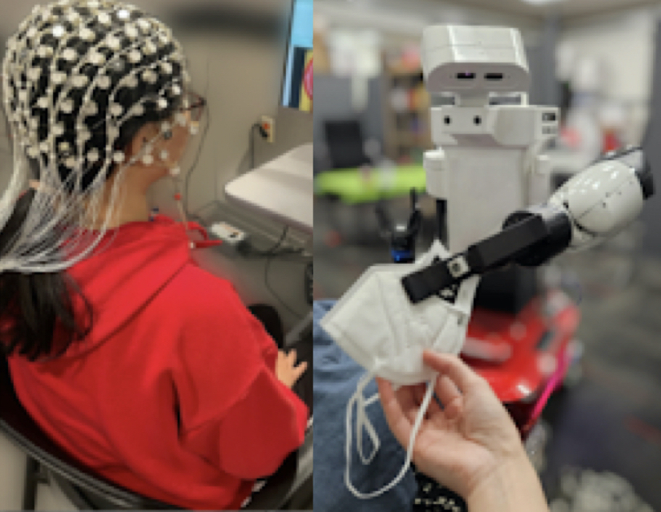
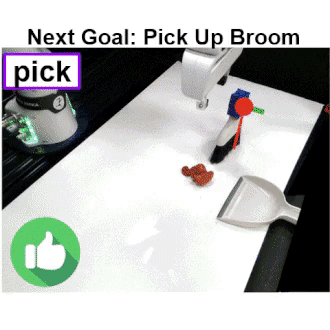
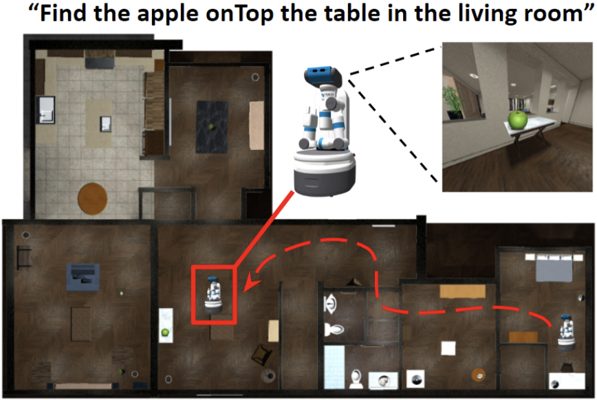
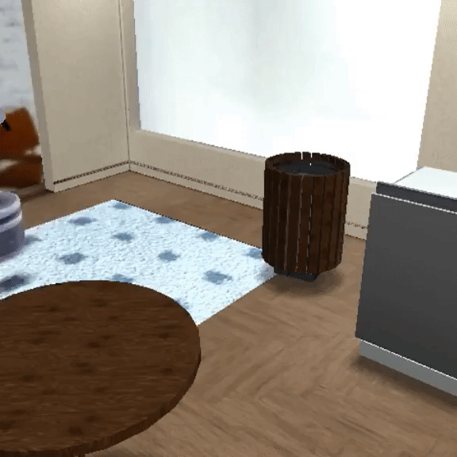
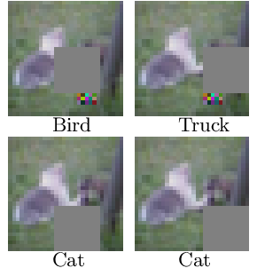
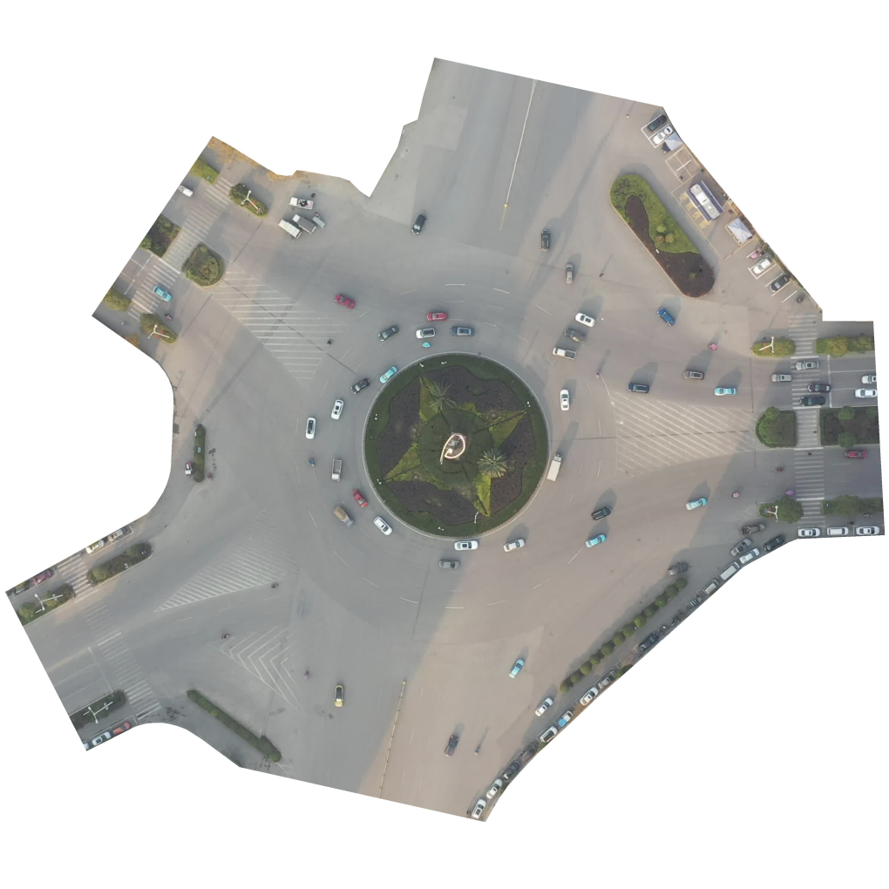
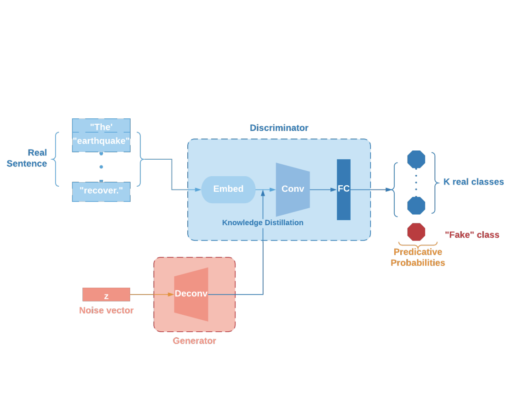

|
I am an incoming CS PhD student at the University of Southern California, where I will be working with Prof. Daniel Seita. Before moving to LA, I am currently spending time in Korea as a visiting scholar in Prof. Youngwoon Lee's lab at Yonsei. I received a MS degree in Computer Science at Stanford University, where I worked on robot learning research with Prof. Fei-Fei Li and Prof. Jiajun Wu in the Stanford Vision Lab. Prior to that, I completed my undergraduate studies in Computer Science and Statistics from UC Berkeley. I was also fortunate to tackle exciting research problems in Amazon Robotics, Microsoft Research, and Apple, where I developed novel algorithms and practical systems to solve various problems in robotics. Email / Resume / GitHub / LinkedIn / Google Scholar |
{kind=link}
|
The goal of my research is to develop systems and learning algorithms for efficient robot manipulation, from various modalities of perception and human feedback. As of now, I am particularly interested in finding effective representations for learning challenging manipulation skills. Specifically, my research focuses on methods for:
|
|  |
Ruohan Zhang*, Sharon Lee*, Minjune Hwang*, Ayano Hiranaka*, Chen Wang, Wensi Ai, Jin Jie Ryan Tan, Shreya Gupta, Yilun Hao, Gabrael Levine, Ruohan Gao, Anthony Norcia, Li Fei-Fei, Jiajun Wu, Conference on Robot Learning (CoRL), 2023 Cognitive Science & Robot Learning Workshop @ CoRL, 2023 paper / project page (*: equal contribution) |
|  |
Ayano Hiranaka*, Minjune Hwang*, Sharon Lee, Chen Wang, Li Fei-Fei, Jiajun Wu, Ruohan Zhang, International Conference on Intelligent Robots and Systems (IROS), 2023 arXiv / project page / poster (*: equal contribution, alphabetically ordered) |
|  |
Michael Lingelbach, Chengshu Li, Minjune Hwang, Andrey Kurenkov, Alan Lou, Roberto Martín-Martín, Ruohan Zhang, Li Fei-Fei, Jiajun Wu, International Conference on Robotics and Automation (ICRA), 2023 arXiv / github |
|  |
Chengshu Li, Cem Gokmen, Gabrael Levine, Roberto Martín-Martín, Sanjana Srivastava, Chen Wang, Josiah Wong, Ruohan Zhang, Michael Lingelbach, Jiankai Sun, Mona Anvari, Minjune Hwang, Manasi Sharma, Arman Aydin, Dhruva Bansal, Samuel Hunter, Kyu-Young Kim, Alan Lou, Caleb R Matthews, Ivan Villa-Renteria, Jerry Huayang Tang, Claire Tang, Fei Xia, Silvio Savarese, Hyowon Gweon, Karen Liu, Jiajun Wu, Li Fei-Fei, Conference on Robot Learning (CoRL), 2022 (Best Paper Nominee) paper / project page |
|
|
Fangyu Wu, Dequan Wang, Minjune Hwang, Chenhui Hao, Jiawei Lu, Jiamu Zhang, Christopher Chou, Trevor Darrell, Alexandre Bayen, Arxiv Preprint, 2022 arXiv / project (github) page |
|  |
Michael McCoyd, Won Park, Steven Chen, Neil Shah, Ryan Roggenkemper, Minjune Hwang, Jason Xinyu Liu, David Wagner, Security in Machine Learning and its Applications (SiMLA), 2020 (Best Paper Award) arXiv / github |
|  |
Fangyu Wu, Dequan Wang, Minjune Hwang, Chenhui Hao, Jiawei Lu, Trevor Darrell, Alexandre Bayen, PAL @ ICRA, 2020 paper |
|  |
Alicia Yi-Ting Tsai*, Selim Günay*, Minjune Hwang*, Chenglong Li*, Pengyuan Zhai*, Laurent El Ghaoui, Khalid M.Mosalam, AI + HADR @ NeurIPS, 2020 arXiv / project page / github (*: equal contribution) |
|
|
- Graduate Teaching Assistant: Stanford CS 231N [2023], Deep Learning for Computer Vision
- Reader (Undergraduate Teaching Assistant): UC Berkeley EE 227BT [2020], Convex Optimization
- Course Instructor: Ecole Bilingue de Berkeley [2019], Robotics & Programming (with Prof. Alex Bayen)
- Undergraduate Lab Assistant: UC Berkeley CS 61A [2018], Structure and Interpretation of Computer Programs
|
|
- Applied Scientist Intern, Amazon Robotics
- Research Intern, Microsoft
- Software Engineering Intern (Motion & Trajectory Planning), Apple (SPG)